customizing the output from `plot_interaction()`
customize_plot_interactions.RmdSince plot_interaction() just returns a
ggplot object, the output be customized using a combination
of different ggplot2 functions.
Baseline Plot
Here we fit a simple model, and create a baseline plot, which we’ll customize.
library(modsem)
#> This is modsem (1.0.15). Please report any bugs!
library(ggplot2)
m <- '
X =~ x1 + x2 + x3
Z =~ z1 + z2 + z3
Y =~ y1 + y2 + y3
Y ~ X + Z + X:Z
'
fit <- modsem(m, data = oneInt, method = "lms")
p <- plot_interaction(x = "X", z = "Z", y = "Y", vals_z = c(-1, 1), model = fit)
print(p)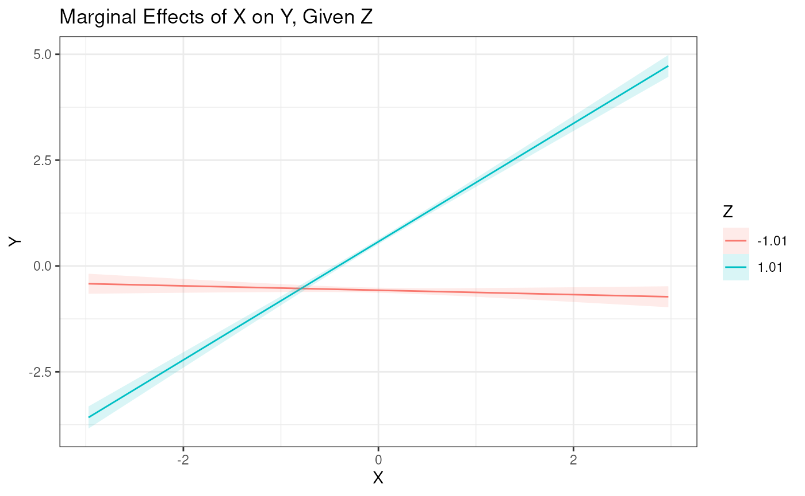
Changing Titles and Labels
Legend Title
Changing the legend title is a bit trickier, but it can be done using
the guides() function. Since
plot_interaction() uses both the fill and
color aesthetic, both must be specified, with the same
title.
p + guides(fill=guide_legend(title = "New Legend Title"),
color=guide_legend(title = "New Legend Title"))
Changing Colors
The colors of both the fill and color
aesthetic can be changed using different functions.
Greyscale
Here we replace the fill aesthetic with a greyscale.
p + scale_fill_grey()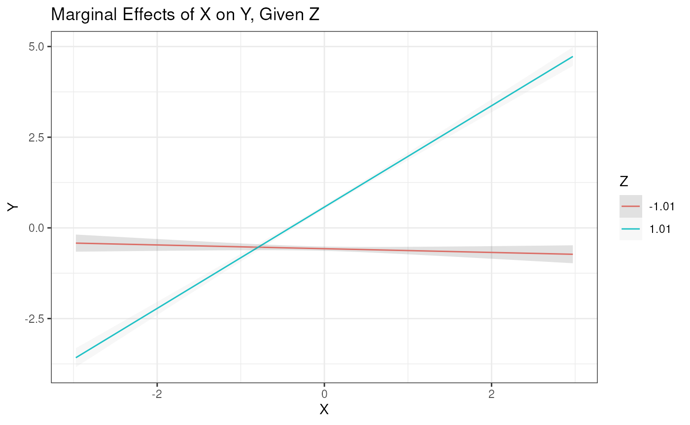
Here we do the same for the color aesthetic.
p + scale_color_grey()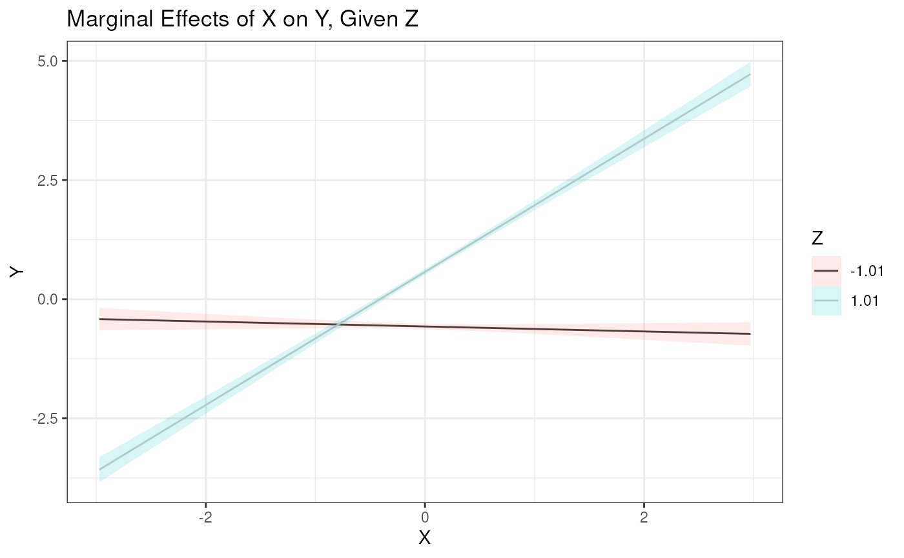
Combining both, we get a greyscale version of the plot.
p + scale_color_grey() + scale_fill_grey()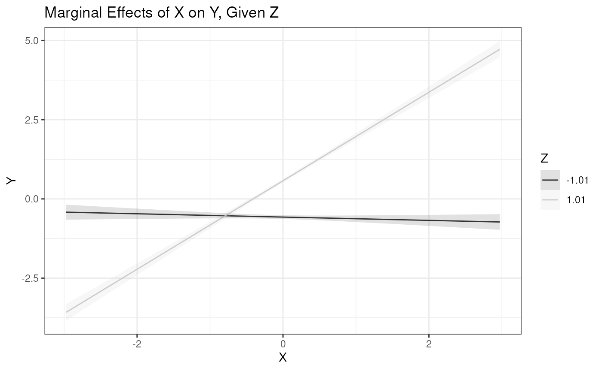
NOTE: As of version 1.0.14 there is a
separate greyscale argument, for using a greyscale theme,
simplifying the process.
Brewer Color palettes
ggplot2 comes with a few different color palettes, which
we can use to the replace the default color palette. Here we have
numerous options (you can also download additional packages), but here
we can see a few examples using some of the brewer
palettes.
To see the available palettes you can run this snippet.
# You might need to install the `RColorBrewer` package
RColorBrewer::display.brewer.all()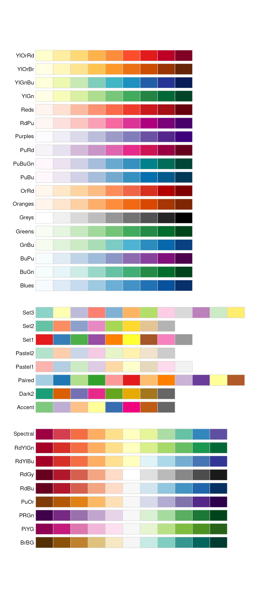
Here we have an example using the Dark2 palette.
# We need to apply the color scale to both the fill and color aesthetics
p + scale_fill_brewer(palette = "Dark2") +
scale_color_brewer(palette = "Dark2")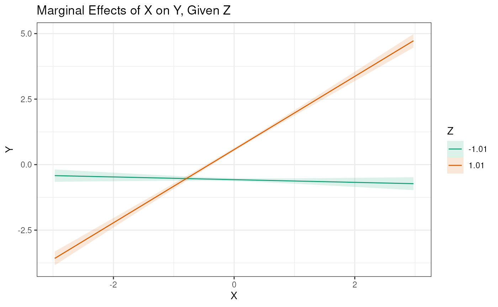
Here we have an example using the Accent palette.
# We need to apply the color scale to both the fill and color aesthetics
p + scale_fill_brewer(palette = "Accent") +
scale_color_brewer(palette = "Accent")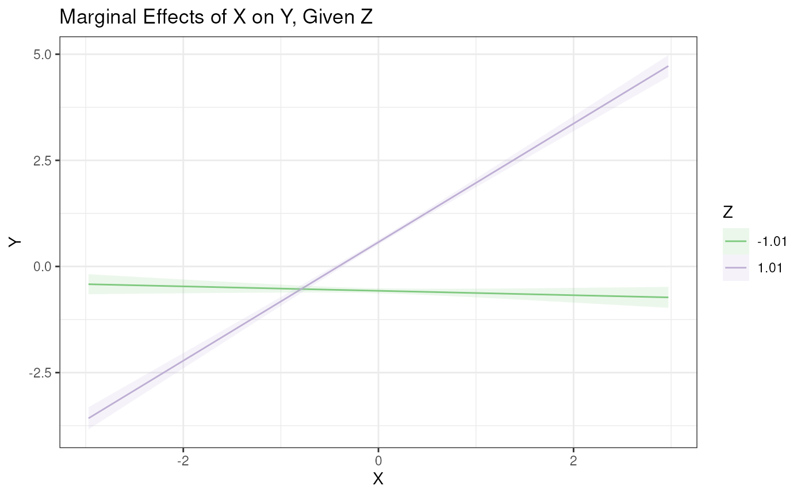
Custom Color Palettes
It is also possible to use custom/manual color palettes, but this is more cumbersome. Here we see an example.
custom_colors = c("#E69F00", "#56B4E9")
p + scale_fill_manual(values = custom_colors) +
scale_color_manual(values = custom_colors)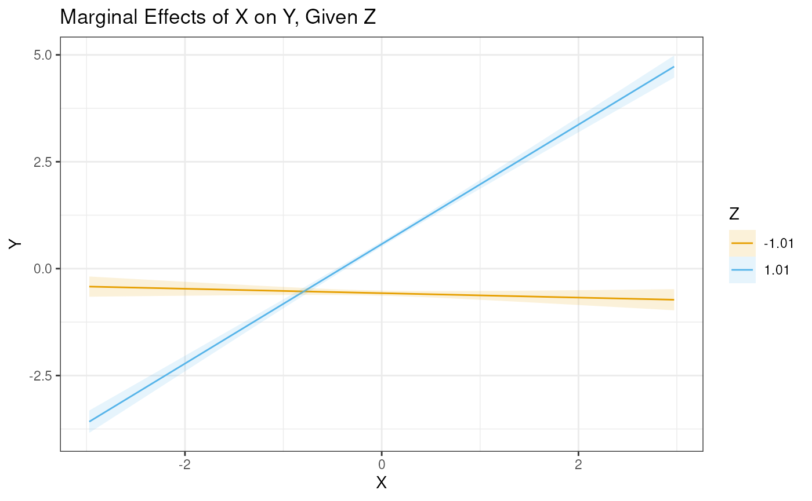
Changing Line types
Changing the linetypes is a more compliacted than changing the colors
in the plot. This is because we have to add a whole new aesthetic to the
plot. This can done using the aes() function. Behind the
scenes, modsem uses a variable cat_z to form
the groups in the output from plot_interaction, which is
why we pass linetype = cat_z.
p + aes(linetype = cat_z)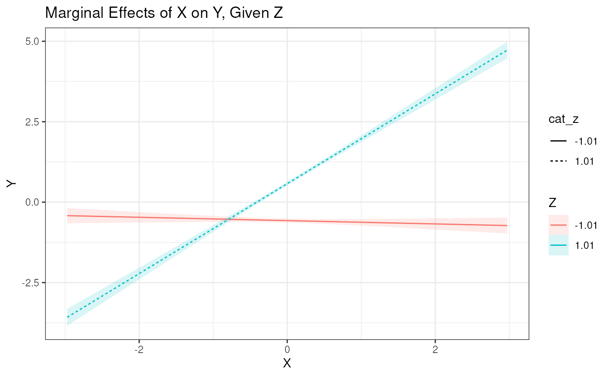 Here we can see that we had an unfortunate side effect, where we created a second Legend in our plot. This can however be fixed by renaming the Legend title (see the Legend Title section).
p + aes(linetype = cat_z) +
guides(linetype = guide_legend("Z"))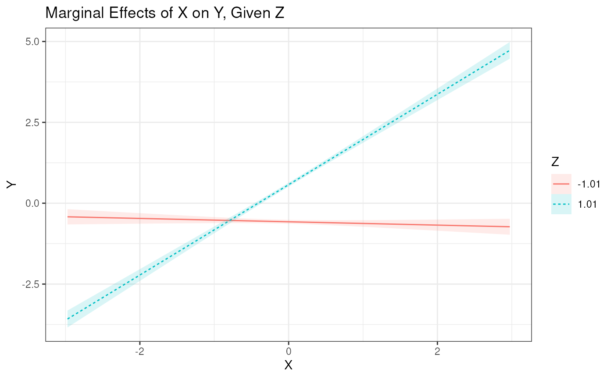
Combinations
Here we can see an example combining the different options.
p +
ggtitle("Customized Plot") + # New Title
xlab("Values of X") + # New X-axis label
ylab("Predicted values of Y") + # New y-axis label
scale_color_grey() + # Add Grey theem
scale_fill_grey() +
aes(linetype = cat_z) + # Add linetypes
guides(color = guide_legend("Values of Z"), # Change Legend Title
fill = guide_legend("Values of Z"),
linetype = guide_legend("Values of Z"))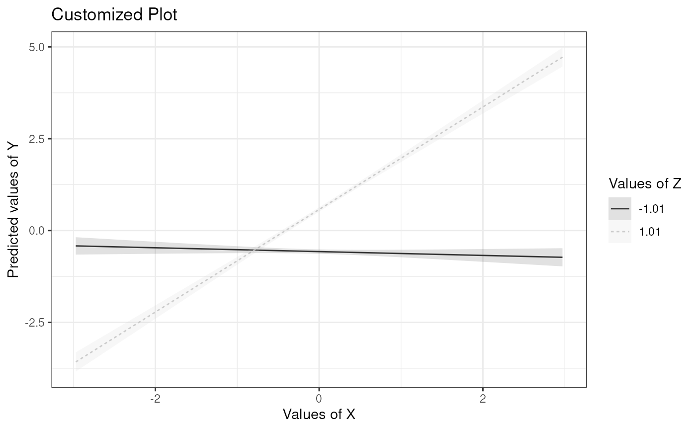